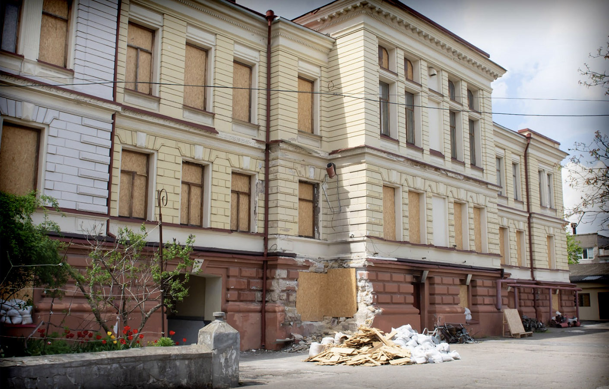
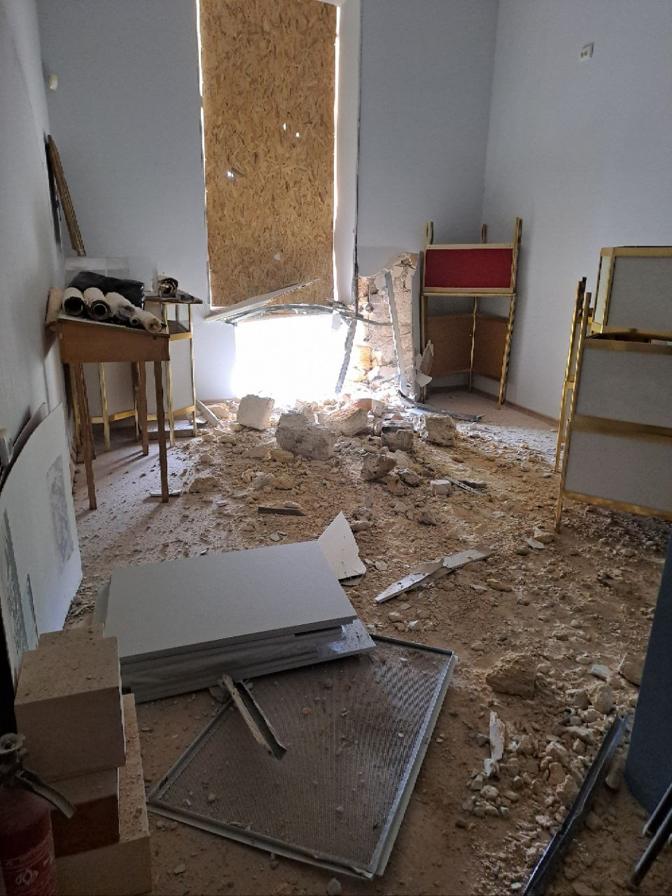
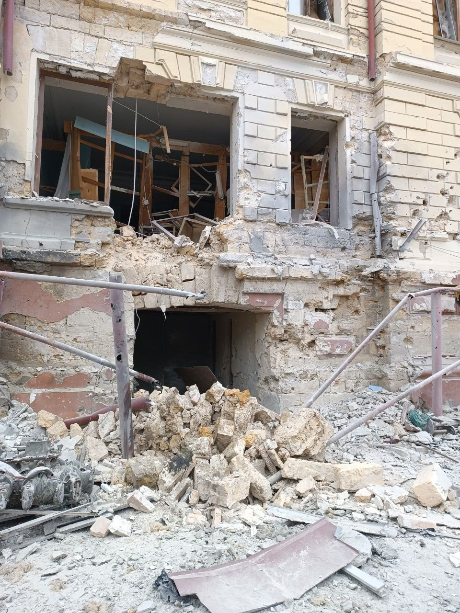
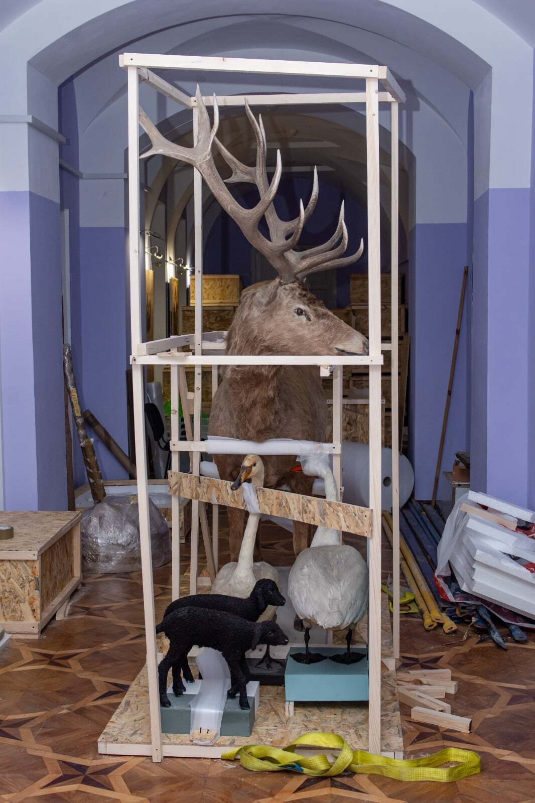
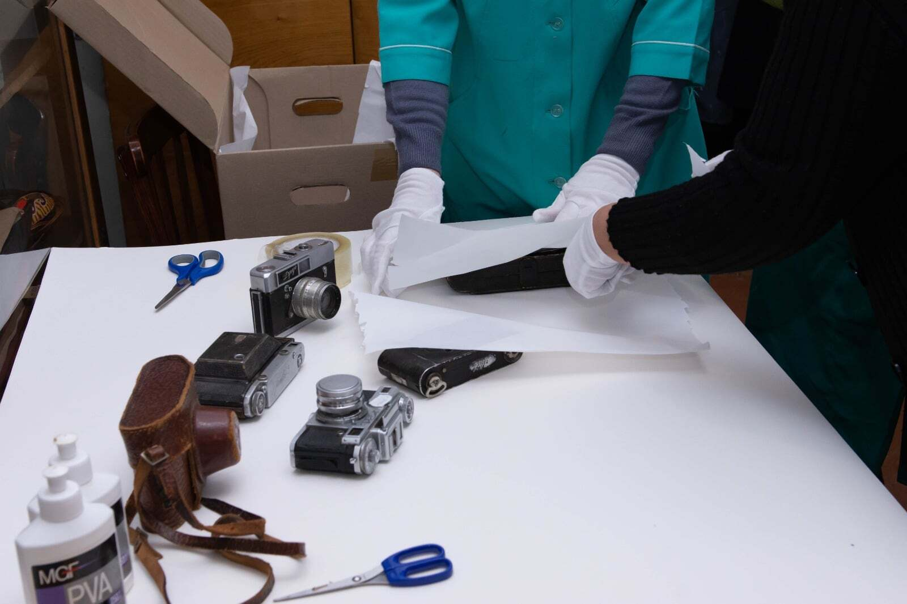
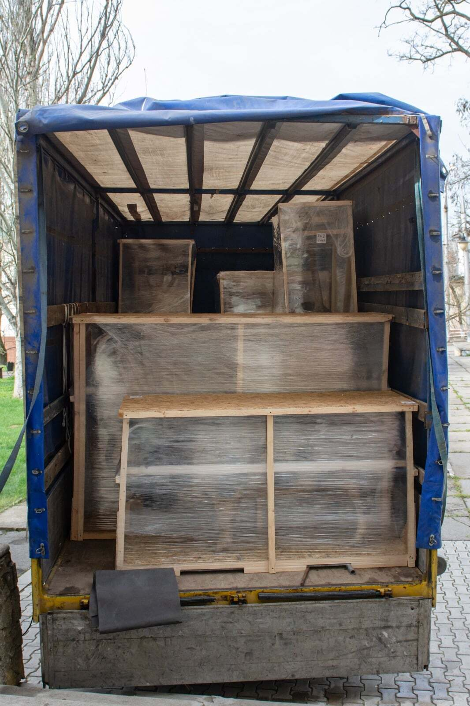
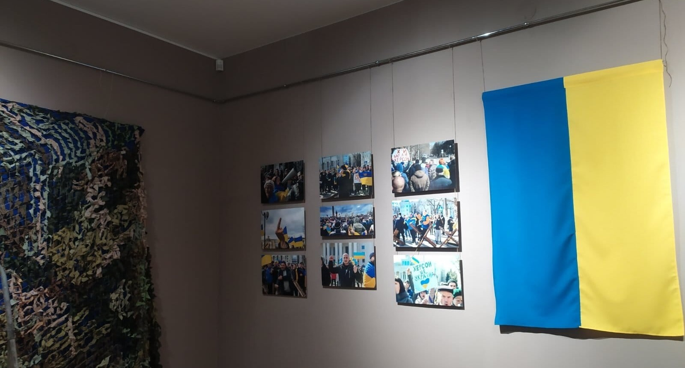

Kherson: A Museum in the Red Zone
20.11.25
In December 2022, Kunsht visited the Regional Museum of Local History in Kherson, previously ransacked by the retreating Russian forces. The city was still recovering from the occupation, but the museum employees were already busy evaluating the scope of what had been stolen and making plans to safeguard the surviving cultural heritage. It could have seemed that the worst was over after Kherson was deoccupied; yet the war drags on, and the city has been a target of continuous, almost daily, Russian shelling ever since. On October 18, 2025, Russian forces targeted the museum building again, damaging nearly one-third of it.
I spoke with the current museum director, Olha Honcharova, about the institution’s functioning during this period.
She has been working at the museum since before the full-scale invasion. Even then, she and her colleagues tried to draw attention to the inappropriate management of the former director, Tetiana Bratchenko: “The personnel were drawing attention to the abuse of power in her management. We turned to the culture department, wrote to newspapers about her management practices, but no one heard us,” Mrs. Olha says. Museologist and project manager of the Urban Republic NGO, Serhii Diachenko, had previously reported that Bratchenko was committing “blatant robbery,” particularly through constant renovation works.

During the occupation, Bratchenko chose to collaborate with Russian authorities. At the end of October 2022, she was charged with treason. The Ukrainian Ministry of Justice also confiscated her property in favor of the state. Bratchenko “voluntarily collaborated with the occupying authorities and publicly supported policies of the aggressor state. She actively participated in events organized to provide information support and spread the rhetoric of the aggressor state and the occupying administration on the temporarily occupied territories of the Kherson region,” the Ministry states. Among other things, she organized and opened exhibitions about Kherson returning to “the native harbor” during the occupation. She’s currently under sanctions and allegedly lives in the territories controlled by Russia.
The Kyiv Independent journalists managed to identify individuals personally involved in the theft of the exhibits. These are museum employees from Crimea (not just local collaborators, but also Russians appointed by the occupying authorities) and FSB.

No staff members of the Kherson museum were involved in the theft. It was these people who managed to safeguard the surviving collection under shellfire after the occupation — the collection that, even after the robbery, remains one of the largest in the Ukrainian South.
Before the Russian-Ukrainian War, the museum’s funds contained over 193,000 exhibits. According to the preliminary estimates by the museum staff, over 23,000 exhibits were stolen. Still, the majority of the collection was rescued after the city's deoccupation.
Currently, the main complication is that all the accounting documentation has been lost, along with the most valuable exhibits. Russians stole all the coin collections, jewelry, icons, orders and medals, as well as weaponry, including the unique cold weapons and firearms: medieval, Japanese, and Chinese swords, sabers and muskets from the Cossack era.

The current museum director says that the robbers were acting professionally: “These were experts who understood the importance of the accounting documentation. Each exhibit has its own standardized passport, inventory card, inventory number, scientific description, and photo. Why is it important? Currently, we work with the Ukrainian prosecutors and the Security Service, and they, in turn, work with Interpol. Thus, if any artifacts appear somewhere at the borders, having the documentation, we will be able to prove that this is our exhibit”.
A small group of employees from the Kherson museums, loyal to Bratchenko, fled along with the Russians. In the currently occupied Henichesk, they have organized their own “Kherson Local History Museum”; however, the stolen exhibits are most likely located in Crimea or Russia.
Olha Honcharova calls it a fake museum: “They have no permanent exhibition, no fund repositories, and no access to the stolen exhibits. They organize banner exhibitions that consist of photos taken from the internet. The cynicism is that one of those exhibitions was about the Kherson citizens who fought against the Nazi occupiers during the Second World War. Today, we are fighting occupiers again, but this time they’re Russians. And these Russian occupiers are exhibiting pictures of warriors who gave their lives to free our land”.

In the liberated Kherson, employees who remained in the city set about rescuing the surviving exhibits.
“From the very first day of deoccupation, we immediately started working on accounting for the losses and safeguarding the remaining museum collection”, the director remembers. “The power was out, there was no running water, no heating, but there were shellings. We had to do our job in such difficult circumstances”.
“When peaceful times come, we will be able to restore the museum’s permanent exhibition,” says Olha Honcharova, “We have enough exhibits. We will be able to showcase all the historical stages of our Kherson region, as we have currently rescued over 160,000 exhibits. It’s the most impressive rescued fund collection in the Ukrainian South.”
The Kherson museum employees managed to safeguard not only their own funds but also a significant part of the artifacts from other museums in the right-bank Kherson region, including Beryslav, Bilozerka, Kozatske, and Olhivka.

“The institution was able to renew all forms of museum operation. Despite the museum being located in a dangerous, so-called ‘red zone’, the employees have gathered exhibits and organized an exhibition about the events of the Russian-Ukrainian war in the Kherson region, titled ‘Unbreakable Kherson Land’. It was transferred to a virtual space because of the danger. Kherson citizens helped to create it,” says Mrs. Olha.
Besides safeguarding the exhibits and renewing museum operations, the employees were also collecting their memories of the Russian occupation.
The museum also offers workshops for children about the history of Ukraine and the Kherson region. In 2023, when the situation was calmer, there were five off-site events in the region.
“Our workshops are planned to be hour-long, but communication with people from the Kherson communities lasted for several hours, because people missed our museum. We saw that our job was important, that, besides the historical educational program, we were providing great psychological support. It’s felt most acutely when visiting children’s hospitals”.
The museum is located very close to the front lines, so it has moved into a virtual space. The employees have developed scientific-educational online projects on different topics, and they also conduct online tours and lectures.

Kherson in 2025 is under fire from artillery, tanks, drone attacks, aviation bombs, and landmines on the streets. Operating a museum under such circumstances is extremely dangerous.
The Regional Museum of Local History of Kherson is situated in three historic buildings of the architectural ensemble of the old city, dating back to the 19th century. They all suffered from shellings, including direct hits; there are no windows, the roofs are damaged, and the walls are pockmarked by shell shards. Yet, despite all of this, the museum staff continue their work. It demands exceptional courage. Therefore, Olha Honcharova calls her colleagues “people of the highest spirit”:
“The workload currently is much bigger than it was in peaceful times. We managed to restore life to the museum, and it’s our inner resistance against the vandalism, against the war, and in the name of the values of humanity”.
The reportage is published with the support of the Alfred P. Sloan Foundation.